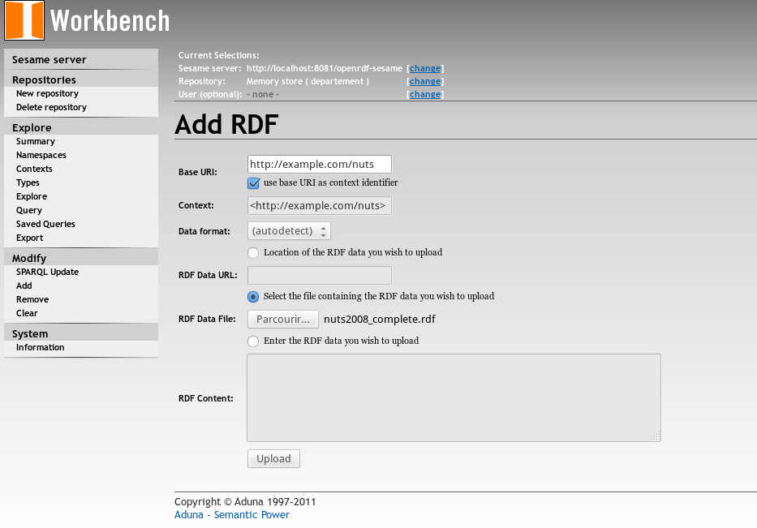
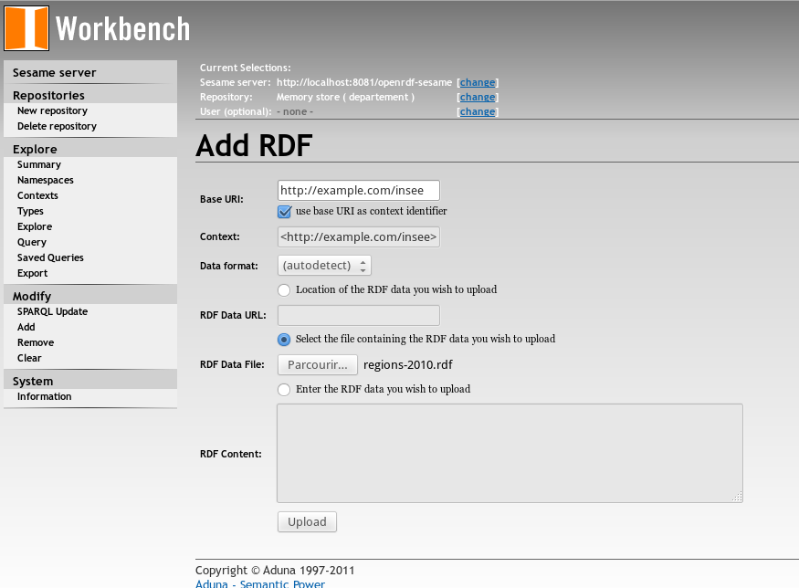
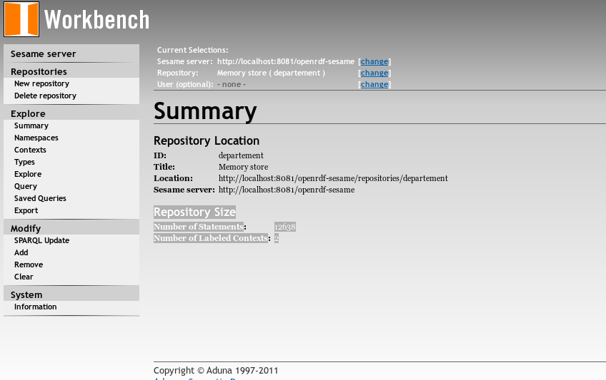
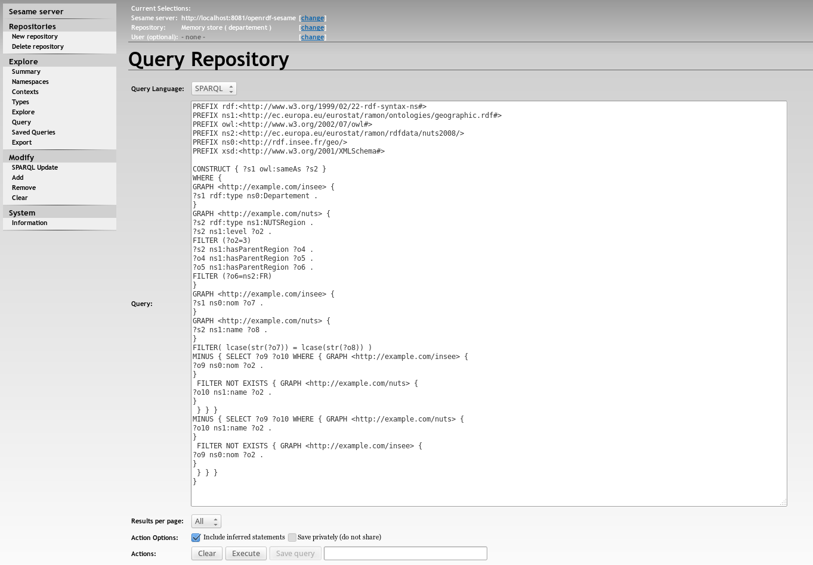
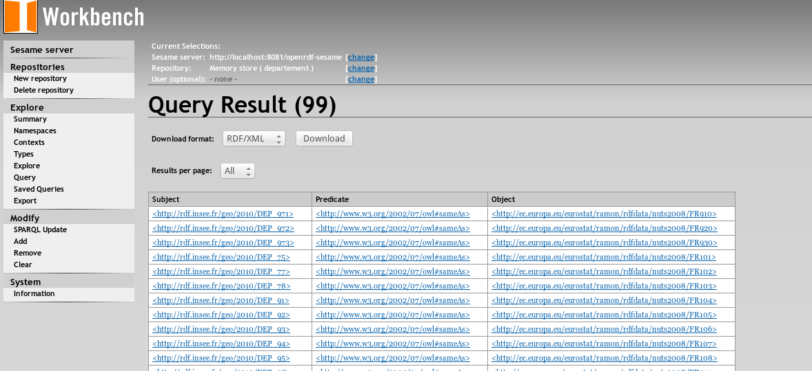
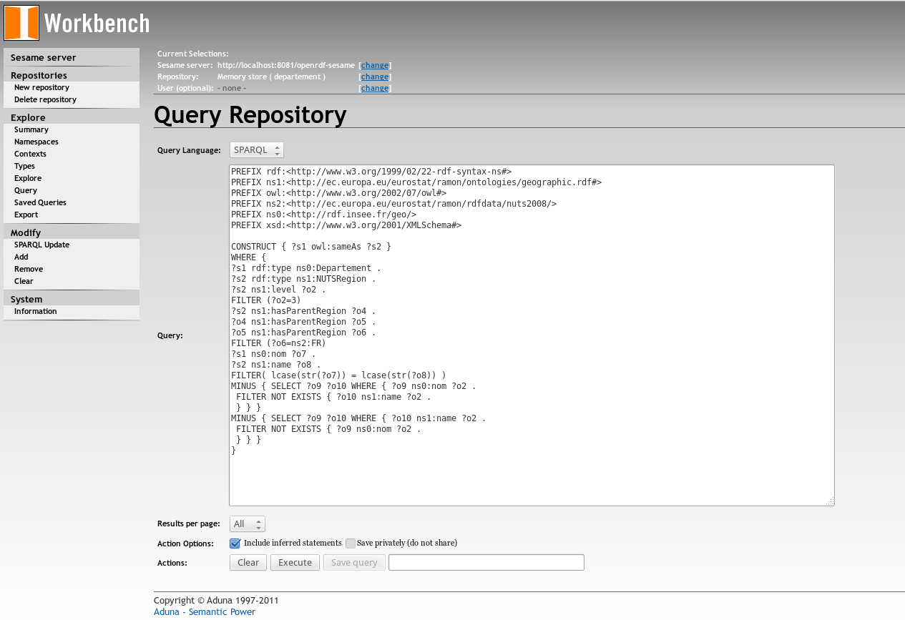
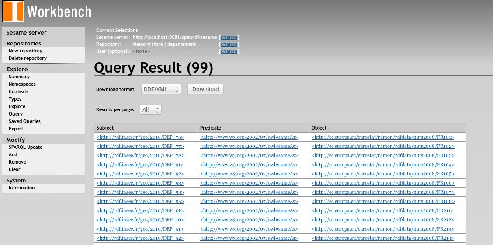
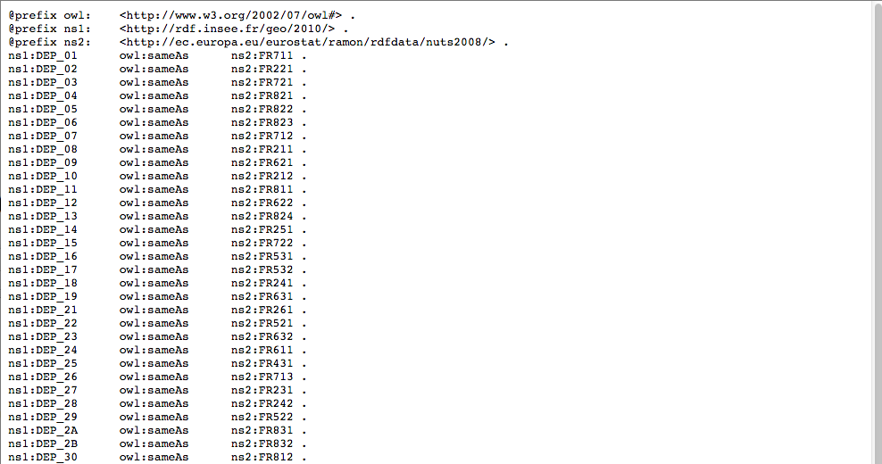
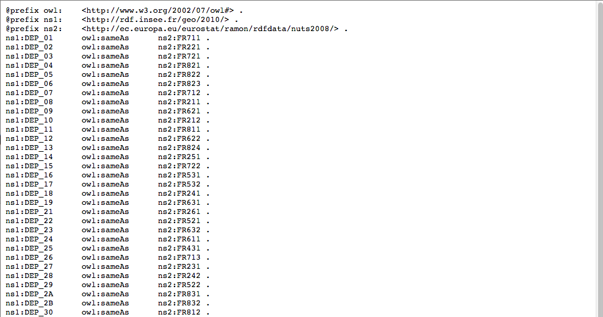
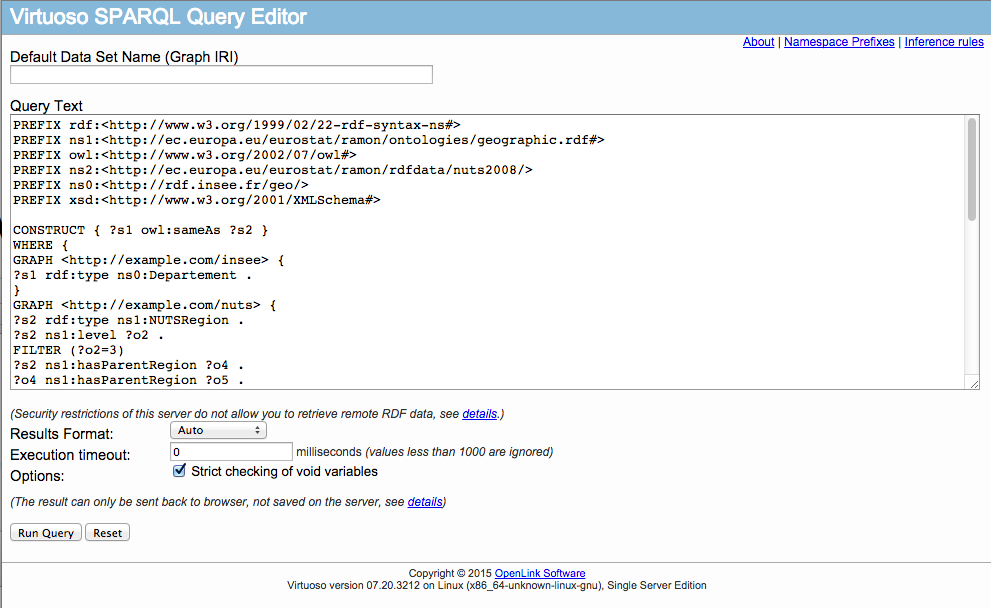

Interlinking data with alignments and link keys (in triple stores)
This shows the use of queries generated in the Data interlinking tutorial
in online triple stores.
Sesame
We are using Sesame.
Evaluating the query in data sets loaded in different name graphs
Data sets are loaded in two different name graphs.



For this test a new query is generated by naming the graphs:
$ java -cp $CLASSPATH fr.inrialpes.exmo.align.cli.ParserPrinter file:linkkey4.rdf -r fr.inrialpes.exmo.align.impl.renderer.SPARQLLinkkerRendererVisitor -DgraphName1=http://example.com/insee -DgraphName2=http://example.com/nuts
which provides the query:
PREFIX rdf:<http://www.w3.org/1999/02/22-rdf-syntax-ns#>
PREFIX ns1:<http://ec.europa.eu/eurostat/ramon/ontologies/geographic.rdf#>
PREFIX owl:<http://www.w3.org/2002/07/owl#>
PREFIX ns2:<http://ec.europa.eu/eurostat/ramon/rdfdata/nuts2008/>
PREFIX ns0:<http://rdf.insee.fr/geo/>
PREFIX xsd:<http://www.w3.org/2001/XMLSchema#>
CONSTRUCT { ?s1 owl:sameAs ?s2 }
WHERE {
GRAPH <http://example.com/insee> {
?s1 rdf:type ns0:Departement .
}
GRAPH <http://example.com/nuts> {
?s2 rdf:type ns1:NUTSRegion .
?s2 ns1:level ?o2 .
FILTER (?o2=3)
?s2 ns1:hasParentRegion ?o4 .
?o4 ns1:hasParentRegion ?o5 .
?o5 ns1:hasParentRegion ?o6 .
FILTER (?o6=ns2:FR)
}
GRAPH <http://example.com/insee> {
?s1 ns0:nom ?o7 .
}
GRAPH <http://example.com/nuts> {
?s2 ns1:name ?o8 .
}
FILTER( lcase(str(?o7)) = lcase(str(?o8)) )
MINUS { GRAPH <http://example.com/insee> {
?s1 ns0:nom ?o2 .
}
FILTER NOT EXISTS { GRAPH <http://example.com/nuts> {
?s2 ns1:name ?o2 .
}
} }
MINUS { GRAPH <http://example.com/nuts> {
?s2 ns1:name ?o2 .
}
FILTER NOT EXISTS { GRAPH <http://example.com/insee> {
?s1 ns0:nom ?o2 .
}
} }
}


Similar results may be obtained by loading the data in the same
graph


Virtuoso
Evaluating the query in data sets loaded the same name graphs
We are
using Virtuoso.
Everything has been loaded in a single named graph (identified by http://exmo)...
 

Evaluating the query in data sets loaded in different name graphs
Here is how to load the graphs:
Here is how to evaluate the same query as generated for Sesame.

The result is the same as previously.
http://alignapi.gforge.inria.fr/tutorial/tutorial6/browser.html
$Id: browser.html 2058 2015-09-11 06:24:58Z euzenat $